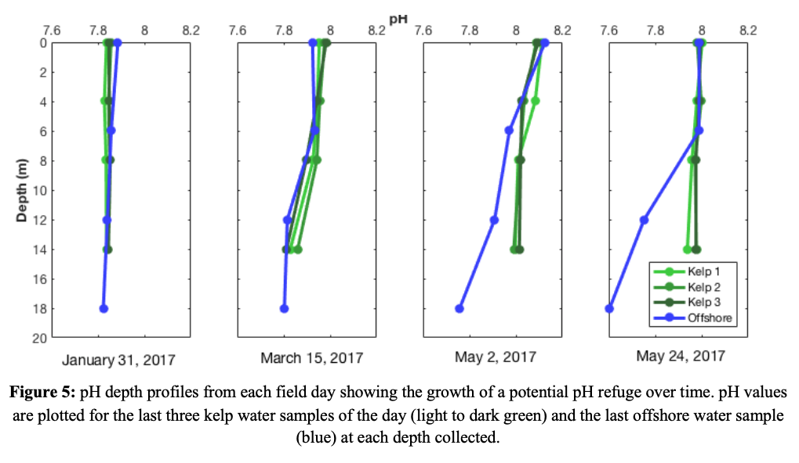
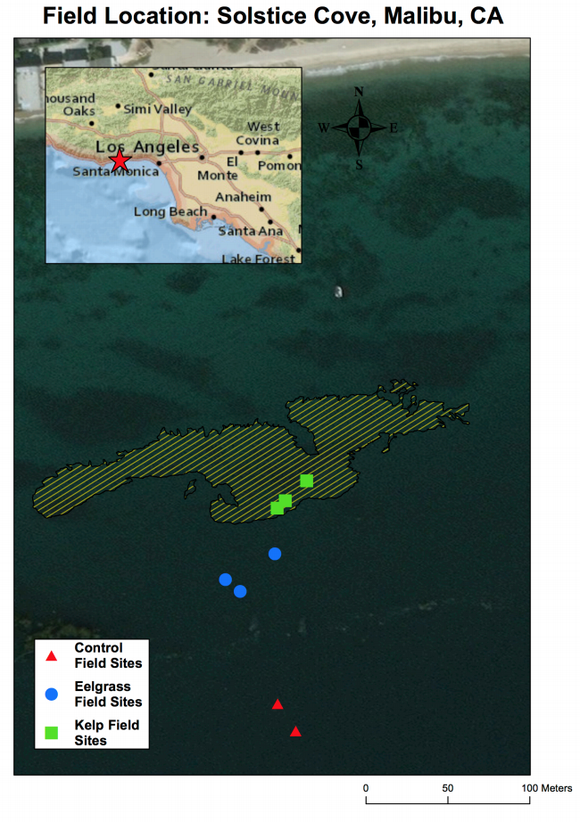
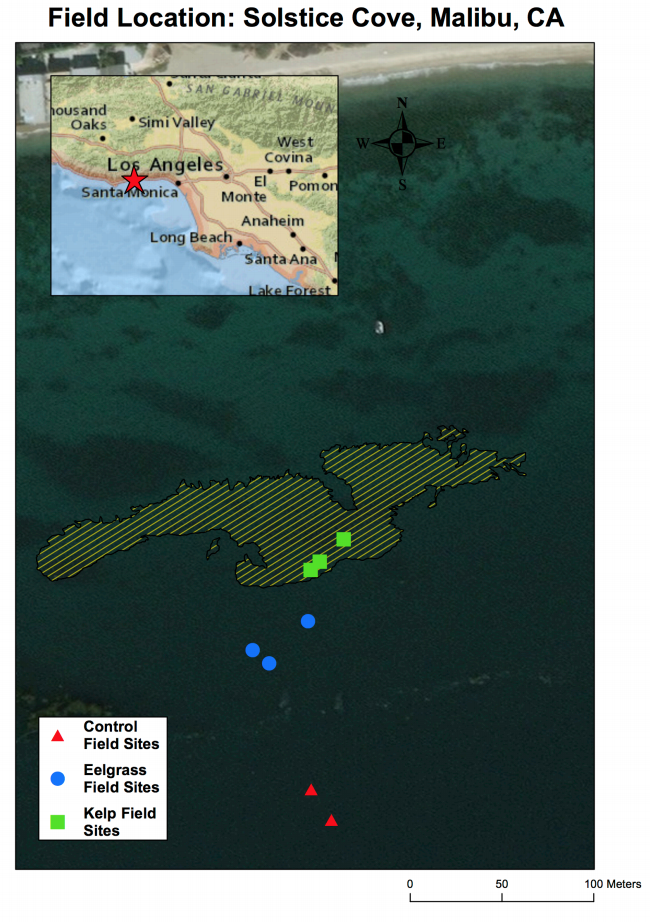
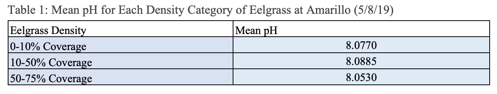

Library
This page organizes various scientific literature and policy legislation which play crucial roles in outlining restoration procedures and implications. Use this compilation as a shortcut for understanding more about the ecological and economic benefits of marine vegetation projects!
UCLA IoES Practicums
-
2016 - 2017Geographic Focus: Palos Verdes, CA
With ocean acidification on the rise, the 2016-2017 practicum team members, Rebecca Ash, Candace Chang, Kathleen Lo, Ariel Pezner, Jeric Rosas, and Kelli Wright set out to determine how kelp forests could affect ocean acidification.
Kelp is known to alter the chemical composition of the water around them. However, at the time, the extent of kelp’s ability to combat ocean acidification had not yet been fully explored. Due to a massive decrease in canopy size, The Bay Foundation was spearheading a restoration project off the coast of Palos Verdes. This restoration area was analyzed by the practicum team in an effort to determine the efficacy of this, and similar sites, as refuges from rising acidification.
Using sampling tools, flow-through sensors, and drones, the team took a holistic approach to understanding the nuances of the kelp forest habitat. They measured multiple aspects of water chemistry including:
- Conductivity
- Temperature
- Dissolved Oxygen (DO)
- Salinity
- Photosynthetically Active Radiation (PAR)
- Pressure
Additionally, using a combination of flow-through sensors and other sampling techniques, the team measured the abundance of phytoplankton in an effort to characterize the limitations of their results.
In order to show the importance of such habitats, they also conducted an in-depth literature review of commercially and culturally important species that live within kelp forests; specifically focusing on how they may react to rising acidification. Lastly, the team attempted to understand the spatial scale of any results they collected by using a combination of dissolved CO2 readings from a flow through sensor and drone aerial footage.
Through this research they were able to find that:
- Kelp forests show promise when it comes to acting as refuges to ocean acidification
- Kelp restorations sites can have significant spatial, chemical, and temporal alterations of the water around them
- This kelp site seemed to show an increase in pH (decrease in ocean acidification) as the restored site began to grow and expand
If true, this has major implications on the efficacy and importance of restoration practices regarding kelp forests in California. On the other hand, it is important to note that the above findings were seen even when they measured phytoplankton abundance (determining that their findings were not largely influenced by their photosynthesis rates). They acknowledged that there may have been upwelling during their sampling periods which should have lowered the pH even further.
The graph below depicts their findings, highlighting the separation between the pH levels of offshore and within the kelp that seemingly grows as the kelp restoration site matures.
 -
2017 - 2018Geographic Focus: Malibu, CA / Santa Monica, CA
In an effort to build upon the 2016-2017 results, the research team of Anna George, Noah Horvath, Destiny Johnson, Eileen Ly, Roajhaan Sakaki, and Shang Shi set out to better understand how marine vegetation can affect ocean acidification. By broadening their scope to include both giant kelp and eelgrass, the team developed a more comprehensive understanding of the interplay between local marine habitats and water chemistry.
With the continued increase of anthropogenic carbon emissions, this research could be imperative to better understand what future oceans will look like. As seawater absorbs these carbon emissions, oceanic acidity increases and threatens shellfish and the chemical equilibrium. If the team were to find that seagrass meadows and kelp forests can help mitigate the deleterious effects of anthropogenic ocean acidification, the students would build upon the scientific support for conservation and restoration of these protective heavens.
To start, the team analyzed satellite photos and sonar data to pick three separate sites:
- Control Sites - devoid of seagrass or kelp
- Kelp Forests
- Eelgrass Meadows
Solstice Canyon, Malibu was determined to have all three of the above sites isolated from one another, lending itself to be the prime location to conduct their research. Using multiple flow-through sensors attached to UCLA’s research vessel Zodiac, the team began to measure the surface levels of:
- Temperature
- Salinity
- Conductivity
- Fluorescence
- Dissolved CO2
However, due to the tricky nature of flow-through sensors, the Dissolved CO2 sensor was found to be jammed which may have lended to certain limitations in their results.
In addition, the team used a SmarTROLL sensor, a cylinder that can be lowered to different depths to measure a host of chemical characteristics of the water column at different depths. The characteristics that they measured included:
- Dissolved Oxygen (DO)
- Actual Conductivity
- Specific Conductivity
- Oxidation-Reduction Potential
- Salinity
- Total Dissolved SOlids (TDS)
- Resistivity
- Density
- pH
This sampling method - in contrast to the flow-through sensors - allowed the team to get depth profiles, completing a more holistic understanding of the chemical changes kelp and or seagrass may have upon the water column. Once the team collected their data over a period of 3 field days spanning roughly a month, they used Excel, MatLab, and Esri ArcGIS to analyze and visualize the data.
The team was able to determine that there were, in fact, differences in all three sites. They found that while the control regions had fairly stable, more acidic ranges of pH, seagrass and kelp sites had wider ranges of pH that did trend towards more basic pH. This does prove that kelp and seagrass have some influence on the surrounding water column, however, it only implies that these habitats can reduce the amount of acidification.
The below graphs are THE MOST significant differences between the pH levels of control sites and the respective marine vegetative habitats. Additionally, below is a spatial map depicting the separation of sample sites along the Malibu coast.
 
 -
2018 - 2019Geographic Focus: Santa Monica, CA
As ocean acidification intensifies along the California coast the need for mitigation strategies is becoming more and more important. In an effort to determine how seagrass meadows could act as buffers or refuges for marine organisms, Ryan Distaso, Emma Burckert, Mackenzie Jackson, Eyal Li, Gonzalo Gutierrez, Evan Gentry, and Britanie Iraheta collected data to show to what extent this may be true.
Similar to the motivation of the 2016-2017 practicum team, this team wanted a more in depth look into this specific species of marine vegetation, eelgrass. Moreover, they wanted to look into how the density of the meadow may affect the species ability to change the chemistry of the water column around them.
Similar to past practicum projects, this team used a multilateral approach, using a SmarTROLL sensor as well as niskin bottles to sample the water column at different depths. With these tools the team measured:
- pH
- Depth
- Dissolved Oxygen (DO)
- Nutrient Concentration
- Carbonate Chemistry
- Environmental DNA (eDNA)
Additionally, the team took a new approach to determining the health and density of the seagrass meadows at the sampling sites. In order to do so, they mounted the pH probe as well as a GoPro camera onto a constructed PVC cage that could be lowered to the sea floor. They then inferred the density of the seagrass meadows using the bottom of the cage as a transect, thus, finding the % cover within that transect.
What the team found was contradictory to both previous scientific data as well as their own hypothesis. They found little to no difference in the pH and dissolved oxygen levels of both high and low density sites. This discrepancy could be attributed to multiple limitations within this study, namely, a lack of high density sites and the presence of other organisms such as kelp and phytoplankton in the area. The team mentioned that in such environments, it is hard to distinguish between effects from the surrounding environment and effects caused by the seagrass in question. Future projects should focus on eliminating confounding variables in order to determine the true effects of seagrass upon the chemical composition of the water column.
Below are data tables that depict their findings regarding differences in seagrass shoot density and pH.

Policy by US State
California
-
2016
This bill allows for the creation of an ocean acidification and hypoxia mitigation task force. This council makes decisions based on the best available scientific knowledge, but is subject to the availability of funding from the ocean protection council. The first meeting of the task force took place in January of 2018 and will convene annually until 2021.
Source -
2016
This bill creates the Ocean Protection Council and requires members to coordinate state agency efforts to protect and conserve California's coastal waters. Additionally, they are to create policies to facilitate the collection and sharing of scientific data relevant to the protection of coastal waters. Lastly, it creates the California Ocean Protection Trust Fund within the state agency and allows, with legislative oversight, the expenditure of funds within this trust by the Ocean Protection Council.
Source -
2009
The overarching goal of this document is to recommend strategies to maintain the current acreage of seagrass in New York State (at that time) as well as increase it by 10% the next year. It recommends to:
- Create and implement a multi‐jurisdictional Seagrass Protection Act or other legislative action.
- Establish and implement numeric water quality criteria/standards to protect seagrass habitat, including the control of eutrophication.
- Develop management and gear restrictions necessary to regulate the use of destructive shellfish harvesting methods.
- Conduct educational outreach to inform the public of findings.
- Create and distribute an annual seagrass report card.
-
2012
This act enacts the recommendations made by the Final Report of the New York State Seagrass Task Force. It specifically outlines the departmental responsibilities but does not state the name of the department.
Source -
2020
This bill creates the Nature Coast Aquatic Preserve, which contains scores of seagrass and coastal habitat. The aim of this bill is to protect the area in an essentially pristine condition for future enjoyment and use.
Source
New York
Florida
Restoration Logistics
Surveying
-
May 2017Geographic Focus: California, USA
This paper details the applicability of Side Scan Sonar technology, in conjunction with Unmanned Surface Vehicles, in mapping seagrass meadows. Using ArcGIS and side scan software they determined that this is an effective and cost efficient method in determining the extent of meadows. However, it should be known that they did so by manually classifying/ground truthing the remote sensing data. More research will need to be done, as unsupervised/automatic classification did not produce quality results.
Source -
December 2012Geographic Focus: Spain + Mediterrenean Sea
This study by Noela Sánchez-Carnero and her associates tests the applicability of, vertically mounted, side scan sonar. Using previously tested statistical mapping methods and computer algorithms to interpret sonar data, she finds that side scan sonar is effective in determining canopy height and distribution but is limited by seafloor variations.
Source -
November 2017Geographic Focus: Global
This paper works to outline the different regions of seagrass distribution and what species reside there. It identifies 6 different regions (4 temperate, 2 tropical) and summarizes the biodiversity of seagrass species as well as the nuances of their local ecosystems.
Source -
2018Geographic Focus: Catalina Island, CA
This paper by Adam Obaza and his fellow researchers outlines the spatial extent, both mapping and depth profiling, of all seagrass meadows around Catalina Island. It also attempts to infer the biodiversity of the local meadows by counting what fish species were encountered during dives within these habitats.
Source -
2002Geographic Focus: Global
This book is a great resource for the basics behind marine vegetation habitats, specifically mangroves. It outlines their importance and ecosystem services as well as the largest dangers both now and going forward. Furthermore, it looks to outline and recommend successful restoration and conservation techniques.
Source
Disturbance Factors
-
September 2004Geographic Focus: Europe + Global
This study attempts to understand the factors that affect resiliency and restoration timescales of seagrass species in Europe. It finds that the time it takes for meadows to rebound from disturbances depends greatly on the species and specifically the species growth rate. These time scales range from roughly a year for Zostera noltii to possibly centuries for Posidonia oceanica.
Source -
December 2006Geographic Focus: USA, Belize, Brazil
Frederick Short and his cohorts analyze data from a cross country monitoring program, called SeagrassNet (c. 2001), to determine global patterns of seagrass habitat health as well as changes in environment variables. They find that their case studies saw decline based on eutrophication, climate change, and complex trophic interactions.
Source -
June 2017Geographic Focus: North America
This paper tries to quantify carbon flux and carbon sequestration efficiency in natural seagrass beds, restoration seagrass beds, and barren patches in North America. They found that restored areas had a greater capacity to store carbon than any of the other sites. This emphasizes the need and motivation of restoration practices.
Source
Management
-
2007Geographic Focus: United Kingdom
Michael Elliott and his team review previous restoration projects in the United Kingdom with the aim to determine best and worst practices. They find that estuarine restoration projects can be split into 4 different categories:
- Natural recovery from a natural or anthropogenic change
- Anthropogenic interventions in response to a degraded environment
- Anthropogenic responses to a single stressor
- Habitat enhancement or creation
-
2013Geographic Focus: Mediterranean Sea
Fabrizio Gianni and his fellow researchers set out to synthesize conservation strategies for Cystoseira forests, a type of macroalgae important to Mediterranean ecosystems. They state that the most important technique is reducing degradation factors; and point out that a good way to do this is with MPAs. The MPAs are a large focus of this piece as the researchers outline that Cystoseira forests within MPAs can act as propagules for natural restoration outside and inside the MPA and also act as prime real estate for anthropogenic restoration projects.
Source -
2015Geographic Focus: USA, Australia, Europe
Elisa Bayraktarov and her associates synthesize a wide variety of restoration studies in an attempt to assess the cost and success of restoration sites around the world. This literature review sources 235 studies from restoration projects involving coral reefs, mangroves, and seagrass, as well as other species. They found important information such as the fact that restoration projects typically cost between $80,000-600,000 (2010). In addition, they determined that restoration projects in developing communities cost the least, while community- and volunteer-based projects were also relatively inexpensive. Lastly, restoration success depended largely on species, with coral and salt marshes performing best, while seagrasses performed the worst.
Source -
March 2012Geographic Focus: China
This analysis of China’s most notable coastal restoration projects, by Bin Chen and his associates, put the practices and methodologies of these projects under the microscope. They find that some of the largest hurdles for projects are:
- A comprehensive understanding of the factors (economic, political and social) that affect setting up attainable and clear goals
- Properly weighing the larger ecological functions of the restored species in question
- Understanding the environmental variables causing habitat degradation BEFORE the restoration process is started
- Emphasizing the need for future monitoring, management, and integration of new technologies, while being cognizant of possible degradation due to restoration practices
-
July 2008Geographic Focus: Chesapeake Bay, USA
Kenneth Moore and fellow associates assess how grazing practices and marine herbivory affect the restoration success of marine vegetation. More specifically, they see that the success of Vallisneria americana restoration depends on low grazing during the early periods of restoration (specifically seeding) as well as the restoration method (transplants, seeding dispersal, seed pod planting). In addition, they monitor the effects of different methods on sedimentation and water quality.
Source -
January 2010Geographic Focus: Atlantic Coast, USA
This paper, led by Robert Orth, compares the success and failures of Eelgrass restoration practices in Virginia against those in Chesapeake and Chatanuga Bays. They attribute a higher success rate in Virginia, in part, to lower water temperatures and favorable policies that encourage restoration. While the largest hurdles in the two bay areas are low water quality combined with high water temperatures.
Source -
July 2008Geographic Focus: Chesapeake Bay, USA
Shafer Deborah and colleagues attempted here to assess the feasibility of using seeds as the primary source of restoration in Chesapeake Bay. They find that the speed of restoration is greatly increased, for example, 13.4 HA of area were restored 2003-2008, while only 3.8 HA of area were restored in the previous 21 years. While there could be many reasons for this, the difference is notable. This paper is best read in association with “The role of habitat and herbivory on the restoration of tidal freshwater submerged aquatic vegetation populations” as that paper is seemingly used as a resource in this paper.
Source -
1997Geographic Focus: Washington, USA
This document aims to outline conservation and restoration goals in Puget Sound, Washington. It sets out to determine what anthropogenic factors cause marine habitat decline and what species are most vulnerable to these declines. Additionally, it attempts to outline practices that best conserve and restore these habitats while recommending ways to improve awareness and management of declining habitats. Finally, they determine that successful protection and restoration require two prerequisites:
- A clear mandate for the management of ecological connectedness between all species
- Correct provision of the management resources
-
October 2017Geographic Focus: Sulawesi, Indonesia
This study by Susan Williams and her colleagues highlights the importance of biodiversity in restoration efforts. They find that, in the Coral Triangle, valuable fisheries, coastal protection, and many other ecosystem services provided by intact habitats are on the decline and thus restoration is needed. Furthermore, it is important that seagrass restoration sites had more success when more species were transplanted. It is a simple, but important finding.
Source
Location-Specific Results
Ecosystem Services
Carbon Cycle
-
January 2017Geographic Focus: Global
Carlos Duarte and his fellow researchers uncover an astonishing link between seagrass detritus and continental shelf/deep sea food webs. Moreover, by tracking the export of carbon outside of seagrass meadows, this paper highlights a forgotten portion of carbon sequestration provided by seagrasses. This finding helps further understand the importance of marine ecosystem services and provides support for the need of restoration projects and the scope of their impact.
Source -
February 2005Geographic Focus: Spain, Mediterranean Sea
Frédéric Gazeau and his team attempt to profile the interplay between a photosynthetically dominated benthic environment and a planktonic, respiration dominated environment. In fact, they took samples of the surface water, as well as samples from within seagrass beds and measured their oxygen and carbon requirements over time. They found that benthic ecosystems dominated by Posidonia Oceanica meadows themselves were not enough to supply the carbon needs of the heterotrophic environments near the surface.
Source -
June 2014Geographic Focus: Global
Peter Macreadie and his associates synthesize information regarding the carbon sequestration potentials of seagrass, as well as provide a policy update of seagrass meadow carbon accounting. Additionally, the researchers outline a possible model for accounting for carbon flux within seagrass meadows, keeping in mind that the loss of such habitats would turn these imperative carbon sinks into carbon sources. Finally, they provide a list of research priorities that, if answered, would be likely to lead to policy change.
Source -
August 2014Geographic Focus: Gran Canaria
Cymodocea nodosa meadows were analyzed by Fernando Tuya and his fellow researchers in an attempt to fully categorize the monetary value of seagrasses. They state that this has been a particularly difficult job in the past due to the multitude of ecosystem services and inherent interconnectivity of marine systems. Thus, they focus their efforts on the value of fish biomass that inhabits the ecosystem, proving fruitful with a value of 655,953.63 USD per hectare. They also go further in estimating the value of fish who migrate out of these meadows, using them as nurseries early in their life stages.
Source -
October 2013Geographic Focus: Chile
Julio Vasquez and his partners put kelp forests under an economic microscope. These researchers seek to determine the market value of raw kelp biomass, associated fisheries, climate change buffering, oxygen creation, value of non-commercial species, cultural value, and, interestingly enough, scientific value. In the end, they determined that kelp beds in Chile are estimated to be worth $540 million dollars.
Source -
September 2018Geographic Focus: Global
This publication by Lina Mtwana and her associates outlines the broad knowledge gaps within seagrass service research. By presenting ways to fill these gaps the article provides an in depth view of seagrass ecosystem services. This paper is based on the 2016 international workshop, Seagrass ecosystem services – what's next?, held in the UK which brought together a myriad of experts presenting at the International Seagrass Biology Workshop, the largest gathering dedicated to seagrass ecosystems.
Source -
January 2010Geographic Focus: Channel Islands, Southern California
This paper outlines the nuances of seagrass habitats within the Southern California Bight, specifically those found around the Northern Channel Islands. It includes detailed maps at the time, as well as in situ data depicting the food web and inhabitants of the local bed. It is an indispensable source for California specific research, however, must be cross referenced due to the publishing date.
Source -
November 2012Geographic Focus: Mexico & The Carribbean Sea
This study determines that there is an active pollination network in the seagrass beds of Thalassia testudinum in the Caribbean. These pollinators are typically mesofauna such as annelids, such as polychaetes, and many crustaceans.
Source -
December 2017Geographic Focus: Scotland, Kenya, Tanzania, Saudi Arabia
Maria Potouroglou and fellow researchers attempt to fill an important knowledge gap in seagrass ecosystem services. While much is known about sediment accretion variations within mangrove and salt marsh habitats over long periods of time, the same can not be said for seagrass. That is, until this study found a stark difference between the variability in elevation of the benthic environment when comparing vegetated and unvegetated areas.
Source -
October 2013Geographic Focus: Global
Carlos Duarte and his associates assess the feasibility to use marine vegetation, such as kelp, seagrass, and mangroves, in eco-engineering and climate change adaptation strategies. It is known that these species provide many ecosystem services that could be useful and necessary in the face of climate change.
Source -
Not yet publishedGeographic Focus: Maine
Nicole Price and her associates take an in-depth look at the interplay between ecosystem services provided by Sugar Kelp, the health of mussels, and ocean acidification. As of April 2020, the full paper has not yet been published, but the abstract and preliminary findings paint a clear picture. The cultivation of kelp and shellfish in congruence can greatly improve both the overall health and shell thickness of mussels, while the kelp ecosystems provide a variable “halo effect” that can be quantitatively measured.
Source -
Not yet publishedGeographic Focus: California
Sarah Traiger and her associates study the variance of biochemical profiles in giant kelp forests. What they find is that the variability is more pronounced in the surface waters and is highly dependent on the time of day. Finally, this paper determines that kelp forests may have diel influence on pH and DO due to their large productive canopy. However, the paper has yet to be published in its entirety and the above conclusions were made from the abstract only.
Source